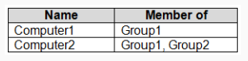
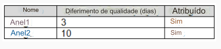
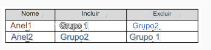
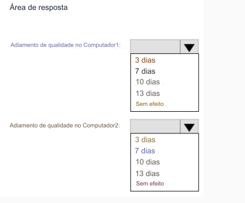

143-PONTO DE ACESSO
Você tem dois computadores que executam o Windows 10.
Os computadores estão inscritos no Microsoft Intune conforme
mostrado na tabela a seguir.

Os anéis de atualização do Windows 10 são definidos no Intune conforme mostrado na tabela a seguir.

Você atribui os anéis de atualização conforme mostrado na tabela a seguir.

Qual é o efeito das configurações no Computador1 e no Computador2? Para responder, selecione as opções
apropriadas na área de resposta.
